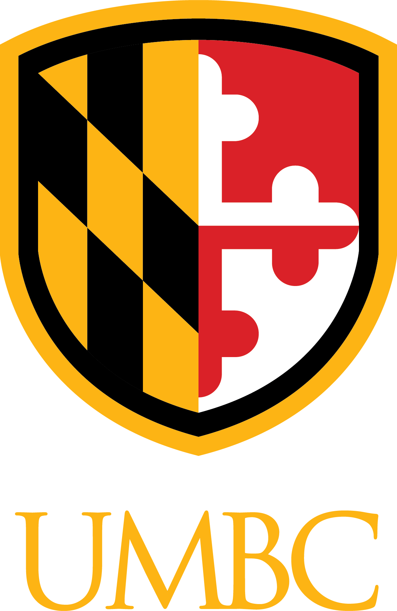
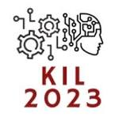
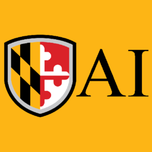
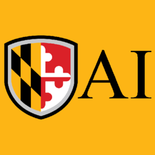
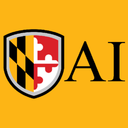

Tutorial: Neurosymbolic AI for EGI
Explainable, Grounded, and Instructable Generations
 

Explainable, Grounded, and Instructable Generations

Large Language Models (LLMs) are transforming Natural Language Processing tasks across multiple domains. Despite their capabilities, their real-world adoption is often limited by issues like the lack of transparency, inadequate understanding of domain protocols, and subpar precision. This tutorial introduces the concept of Neurosymbolic AI, which combines symbolic knowledge structures with statistical learning techniques to build more robust, explainable, and instructable LLMs. This tutorial aims to empower participants to deeply understand Neurosymbolic AI applied to Large Language Models (LLMs), addressing key challenges like explainability, grounding, and instructability (EGI).
Specific learning outcomes:
9:00 AM - 9:30 AM: Introduction to Neurosymbolic AI and Knowledge-infused Learning.
9:30 AM - 10:15 AM: Vector Symbolic Architectures by Edward Raff.
10:15 AM - 10:45 AM: Knowledge-infused Learning for Explainability and Instructibility.
10:45 AM - 11:30 AM: Grounding Blackbox Language Models with RAG.
11:30 AM - 12:00 PM: Building Explainable and Personalized Conversational Agents.
12:00 AM - 12:30 PM: OpenCHA: Building Explainable and Personalized Conversational.
Deepa Tilwani is a PhD candidate in Computer Science at the Artificial Intelligence Institute, University of South Carolina, where she specializes in advancing Large Language Models, Artificial Intelligence, and Neurosymbolic AI. Her research lies at the intersection of AI and neuroscience, leveraging cutting-edge natural language processing, signal processing, and biosignal analysis to develop transformative solutions for complex neuroscience challenges. Recognized with prestigious awards and featured in leading publications, her work reflects significant impact and innovation in health care. Driven by a passion for discovery, she actively seeks opportunities to collaborate and contribute to groundbreaking advancements in this rapidly evolving field.
Ali Mohammadi is currently pursuing a Ph.D. at the University of Maryland, Baltimore County (UMBC), focusing on Safety-enabled Learning, Explainable Artificial Intelligence, Natural Language Processing, and Knowledge Graphs. He is actively engaged in research at the Knowledge-Inference and Knowledge-infused AI Inference Lab, under the guidance of Dr. Manas Gaur and Dr. Frank Ferraro. Prior to his doctoral studies, Ali served as a lecturer, imparting knowledge in courses such as Image Processing, Artificial Intelligence, and Data Structures. He holds a master's in Artificial Intelligence, further enriching his academic journey.
Edward Raff is the Director of Emerging AI at Booz Allen Hamilton and a visiting professor at the University of Maryland, Baltimore County. Dr. Raff’s research toward solving client problems covers topics in Cyber Security, Reproducibility, Adversarial Machine Learning, High-Performance Computing, and Neuro-Symbolic methods. As such, he has been elected as a senior member of AAAI and the IEEE, published two books, 130+ papers, 6 best-paper awards, and 10+ patents. He has co-chaired the Conference on Applied Machine Learning for Information Security (CAMLIS) three times and co-chaired the AAAI workshop on Cyber Security (AICS) three times, was reproducibility chair of AAAI and a senior program member of multiple AI/ML conferences.
Iman Azimi is the assistant director at the UC Irvine - Institute for Future Health and an adjunct professor at the University of Turku. Iman holds a Ph.D. in Information and Communication Technology from the University of Turku and an MSc in Artificial Intelligence and Robotics from Sapienza University of Rome. His research spans machine learning, generative AI, and health data analysis. He works on multiple digital health projects, focusing on conversational health agents, mental health, maternal health and nutrition monitoring, and personalized data analytics utilizing AI techniques on diverse data sources, such as wearable devices.
Aman Chadha leads a team of Generative AI Scientists and Managers at AWS. Previously, he spearheaded Speaker Understanding & Personalization efforts at Amazon Alexa AI. Prior to Amazon, Aman was a key contributor to the Machine Intelligence Neural Design (MIND) team at Apple, where he trained on-device multimodal AI models for applications spanning Natural Language Processing, Computer Vision, and Speech Recognition. As one of the architects behind Apple's M1 chip, he developed machine learning models to predict the performance of future Macs years in advance. Before Apple, Aman honed his expertise in ML accelerators and GPUs during his tenure at Qualcomm and Nvidia. Aman specialized in Multimodal AI at Stanford University. He holds a Master’s in Computer Engineering from the University of Wisconsin-Madison, where he received the Outstanding Graduate Student Award, and a Bachelor’s in Electronics and Telecommunication Engineering with distinction from the University of Mumbai. He has published in leading conferences, such as ACL, EMNLP (Outstanding Paper Award '23), AAAI, EACL, ECIR, ECML, WSDM, WACV, ICASSP, etc. His work has been featured in outlets like The Washington Post, New Scientist, Analytics India Magazine, etc.

Manas Gaur is an assistant professor in the Department of Computer Science and Electrical Engineering at the University of Maryland Baltimore County. He leads the Knowledge-infused AI Inference Lab focusing on NeuroSymbolic AI, Explainable AI, Safe AI, Knowledge-infused Learning, Large Language Models, and Knowledge Graphs, with applications to mental health, cybersecurity, crisis informatics, and conversational systems. Previously he was a senior research scientist at Samsung Research America and a visiting researcher at Alan Turing Institute UK. He was an AI for Social Good Fellow at Dataminr Inc. and Eric Wendy Schmidt Data Science for Social Good Fellow at the University of Chicago. His research has received the best paper award in IEEE Internet Computing, IEEE Intelligent Systems and an honorable mention award at ACM CoDS COMAD. He was selected for AAAI New Faculty Highlights, and USC was awarded the Eminent Doctoral Profile award. He has been a guest editor on NeuroSymbolic AI and Large Language Models in IEEE Internet Computing and ACM Transactions on Computing for Health. He holds senior PC member or area chair for WWW, KDD, CIKM, AAAI, and ACL. He is Co-Chair of the International Semantic Web Conference. He has organized the first Tutorial on Knowledge-infused Learning (AAAI, ACM Hypertext, and Social Computing), Explainable AI using Knowledge Graphs (AI-ML Systems, KDD).
This tutorial is designed to appeal to a broad audience, from graduate students seeking a foundational understanding of Neurosymbolic AI to industry professionals exploring its practical applications. Graduate students will benefit from a comprehensive introduction to the field, while faculty members can delve into cutting-edge research on knowledge graph-driven generative AI, particularly in healthcare. Industry researchers will gain valuable insights into grounding, instructability, and explainability in agents, and a hands-on demonstration will showcase how to integrate Neurosymbolic AI into real-world scenarios.
While this tutorial is designed to be accessible, a foundational understanding of the following topics is recommended to maximize comprehension and engagement:
For those new to these areas, the tutorial will include a foundational overview and focus on providing intuitive explanations of complex concepts. Advanced topics will be presented with an emphasis on accessibility, ensuring participants of varied expertise can follow along and benefit from the session.
While grounding in AI is often associated with multimodality, it encompasses a broader concept [1]. Grounding refers to ensuring that an AI system's understanding is firmly rooted in domain-specific knowledge, guidelines, and expertise [2]. This is crucial for preventing superficial responses that often plague current LLMs [3]. By delving into the techniques and strategies for achieving stronger grounding, participants will learn how to: